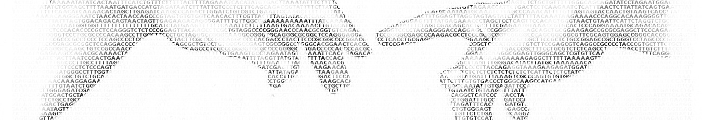

Bioinformatics seminar
Next meeting
Projects opportunities
Tomáš Pluskal, Petr Maršálek, Ela Nekardová, Lukáš Valihrach, Jiří Lindovský, David Hoksza
Wednesday 18. 10. 2023 17:20, lecture hall S3, Malostranské nám. 25Program
| 25. 10. 2023 | Lenka Gahurová (University of South Bohemia) | Insights into long-term female fertility through genomic and transcriptomic approaches |
| 22. 11. 2023 | Jana Musilová (Brno University of Technology) | Augusta, a Python package for inferring Gene Regulatory and Boolean Networks using RNA-Seq and data mining |
| ?. 12. 2023 | Rafael Najmanovich | TBA |
Sending information about next lecture via mailing list
Past lectures
Contact
Managed by departments of
- Software Engineering, Faculty of Mathematics and Physics, Charles University (Malostranské nám. 25, 118 00 Praha 1 - Malá Strana)
- Cell Biology, Faculty of Science, Charles University (Viničná 7, 128 00 Praha 2)